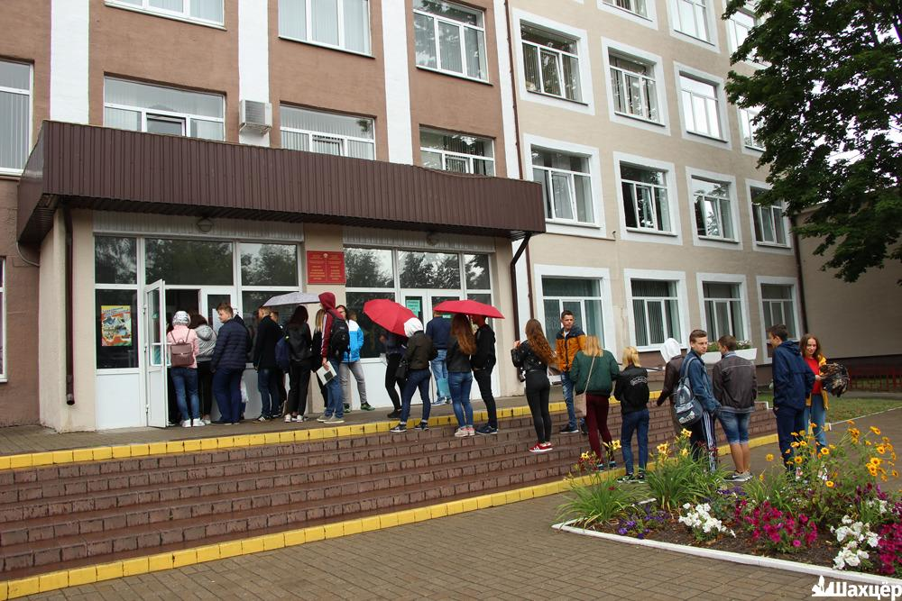

Образование в Солигорске
В городе имеется 11 общеобразовательных школ, один лицей и три гимназии. Также в Солигорске работают 3 учреждения среднего специального образования (колледжи). Существуют организации внеклассной воспитательной работы, в которые входят 11 специализированных детских учреждений. Среди них — школа искусств, художественная школа, станция юных техников, музыкальная школа, детский театр танца, краеведческий музей, центр детского творчества.
В Солигорске действуют 3 учреждения среднего специального образования:
- Солигорский государственный колледж;
- Солигорский государственный горно-химический колледж — филиал БНТУ;
- Солигорский экономический колледж.